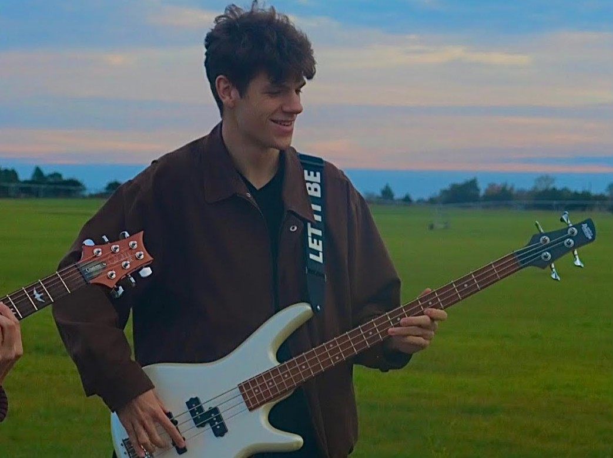

Resume
Technical Skills
- Verilog HDL and FPGA Development: Digital design and verification is my foremost area of interest, so development with Verilog and FPGA's are probably my greatest strengths. Through my computer architecture class, a working knowledge of Verilog was required to design many of the class projects, including a fully-functional single-cycle CPU. I also participated in an IEEE design competition using a project based in Verilog. Over the summer, I continued to improve my Verilog skills and am now quite comfortable with the language.
- C++: Proficiency in C++ is a close second in terms of my strongest technical skills. Almost every engineering course's curriculum at Texas A&M is done in C++, as it provides an excellent understanding of lower-level programming languages and memory management. As a result, most of my coding done inside and outside of class has been in this language, and it is a skill I continue to develop.
- HTML + CSS: Though I'm less proficient in HTML/CSS than other languages, I'd definitely say its one of my skills thanks to the construction of this website and future class projects. Manipulating text/images, linking pages, and switching styles using JavaScript have given me an excellent foundation in web development that will continue to grow as I work on larger and more complex projects.
Areas of Interest
- Digital Design/Verification: Ever since learning about Verilog, the concept of building and testing a virtual circuit has fascinated me. It allows you to tinker with the concepts of electrical engineering without ever having to acquire the proper analog components or resources. This intersection between electrical engineering and computer science is very interesting to me, and it is a direction which I would like to pursue even further.
- Digital Signal Processing: This is another field that I feel perfectly strikes a balance between computer science and electrical engineering. A good knowledge of algorithms and data sampling/acquisition is a necessity for this field as well as an excellent understanding of signals and systems. There are also plenty of applications to music recording and audio design, which I am definitely interested in.
- Software Engineering/Web Development: Software engineering has always been an area of interest for me, partially because of how much power it gives to the practicing engineer. Most other engineering disciplines require significant access to resources to practice the theoretical concepts learned in class. For software engineers and web developers, however, the ability to master their craft is put into their hands from day one. The sheer variety of applications and sites that can be built is astounding, and this variety only increases as our tools become more robust. This creative freedom is what makes the field so exciting to me.
